문의 접수부터 운영자 답변·CMS 집계까지 — 실제 배포본 화면 캡처 기반
/app 게스트 · /cms firstadmin)에 헤드리스 브라우저로 직접 접속해 실행·캡처한 스크린샷입니다. 단, 현재 배포본은 앱 접수 버튼이 서버 저장을 하지 않는 미구현 상태라(하단 미결 1번), "처리 중 → 답변 완료" 상태 화면 검증에 필요한 문의 데이터 2건은 콘솔에서 실제 Firestore에 생성하고 관리자 권한으로 답변을 저장한 뒤, 앱·CMS의 실제 렌더링 로직이 그려낸 화면을 캡처했습니다. 그림으로 그려낸 화면은 없습니다.고객센터는 마이 탭의 "도움말" 그룹에서 진입한다. 같은 그룹에 공지사항, 이용약관·개인정보처리방침이 함께 배치되어 있다. 이 밖에 계정 차단 안내(error-blocked)·닉네임 충돌 등 오류 화면의 "고객센터 문의" CTA로도 연결된다.
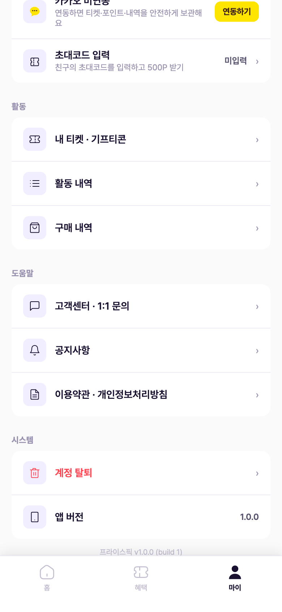
상단 배너에 운영 정보 3종(운영 시간 평일 10–18시 / 평균 답변 1–2 영업일 / 주말·공휴일 휴무)을 고정 노출한다. 상담 채널은 카카오채널 상담(실시간 채팅)과 1:1 문의(비동기 접수) 두 가지. 하단에 내 문의 내역이 붙고, "문의 내역은 탈퇴 전까지 영구 보존됩니다" 문구를 노출한다.
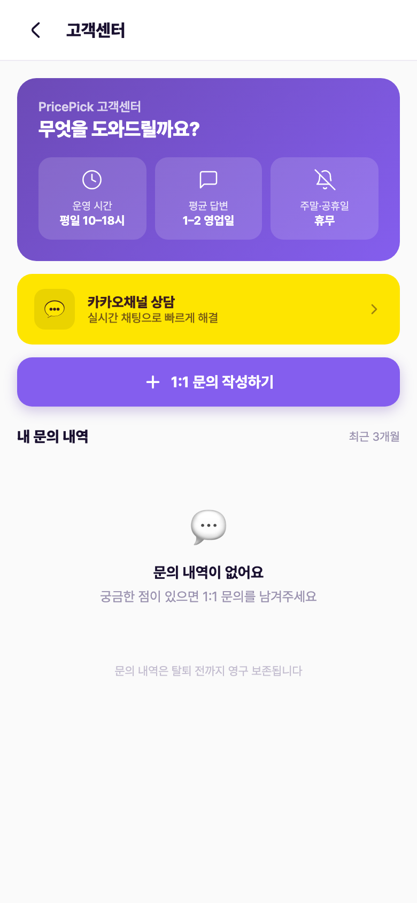
"카카오채널 상담"을 누르면 브릿지 화면을 거쳐 외부 카카오톡 채널로 연결된다. 앱은 채널 URL 딥링크를 여는 역할만 하고, 실제 상담 응대는 카카오채널에서 이뤄진다 — 앱이 별도로 처리할 로직 없음 (DevQA #8 ① 확정 답변, 2026-07-06).
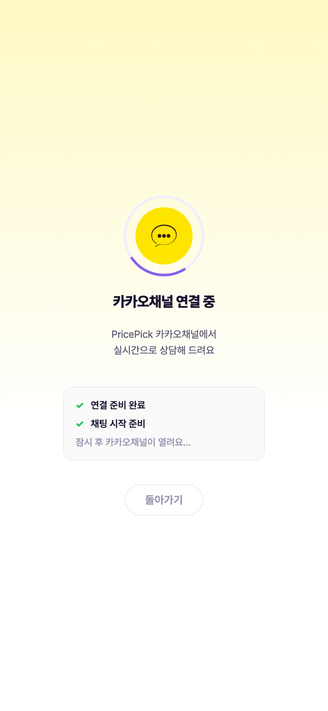
문의 유형(5종 중 택1) + 제목(최대 50자) + 내용(최대 500자)을 입력한다. 세 항목이 모두 채워져야 "접수하기"가 활성화된다. 폼 하단에 답변 운영 시간 안내를 고정 노출.
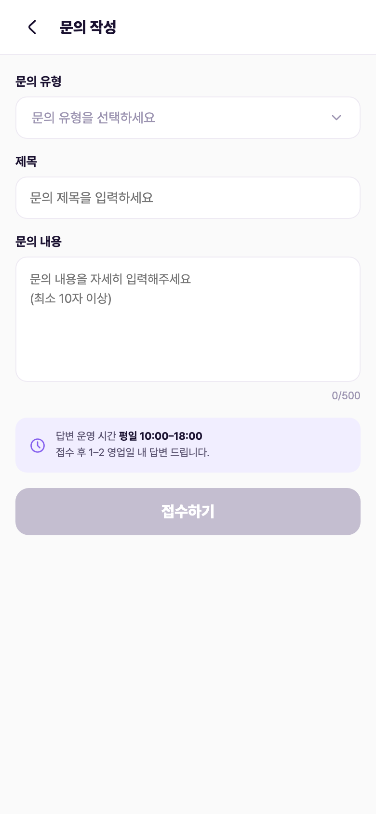
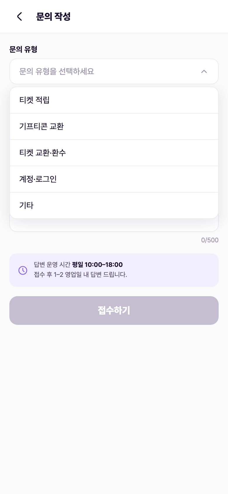
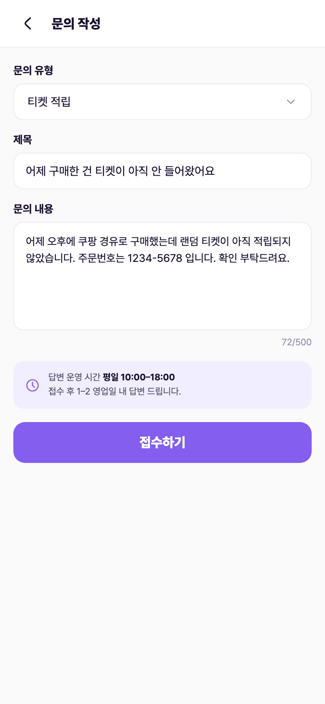
접수하기를 누르면 버튼이 즉시 비활성화(중복 접수 방지)되고 "문의가 접수되었습니다. 평일 1–2일 내 답변드릴게요." 토스트가 노출된다. 접수된 문의는 inquiries 컬렉션에 상태 pending(미처리)으로 쌓이고 CMS 집계에 잡힌다.
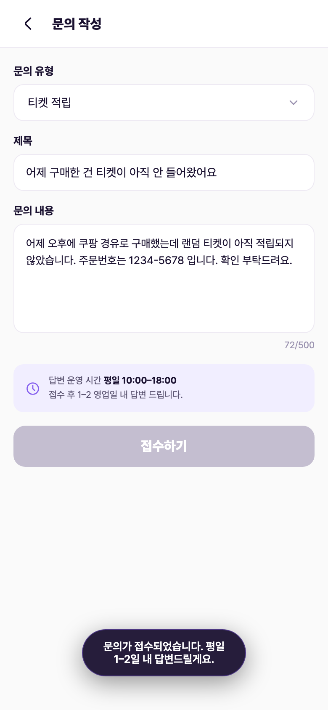
접수된 문의는 고객센터 홈의 "내 문의 내역"에 최신순으로 쌓인다. 카드마다 유형 뱃지 + 상태 뱃지(처리 중 / 답변 완료) + 제목 + 접수일을 표시. 답변 전에는 주황 "처리 중"으로 노출된다.
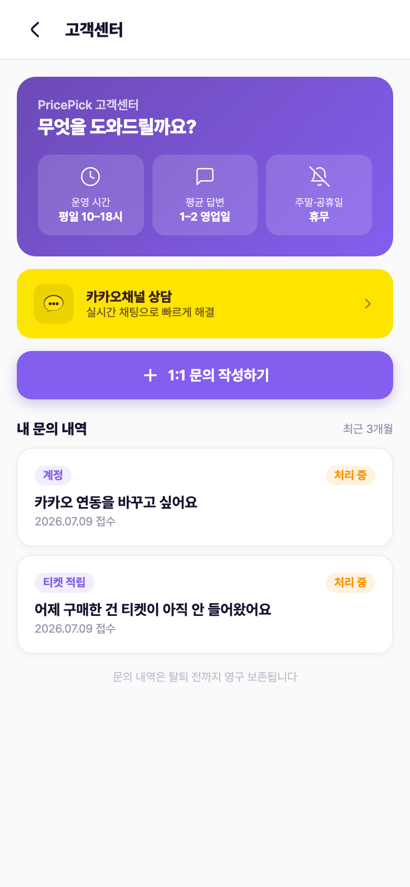
대시보드에 "미처리 문의" KPI(pending 상태 실집계)가 뜨고, 좌측 네비 "1:1 문의" 메뉴에 미처리 건수 배지가 붙는다. 문의 관리 화면은 통계 4카드(미처리 / 처리 중 / 완료 / 평균 응답 시간) + 검색·상태·유형 필터 + 문의 목록(제목·상태·회원 3행 식별·접수일·유형)으로 구성. 상단 안내: 완료 건도 재오픈 가능하며 재오픈 시 변경 사유·이력(누가·언제)을 기록한다.
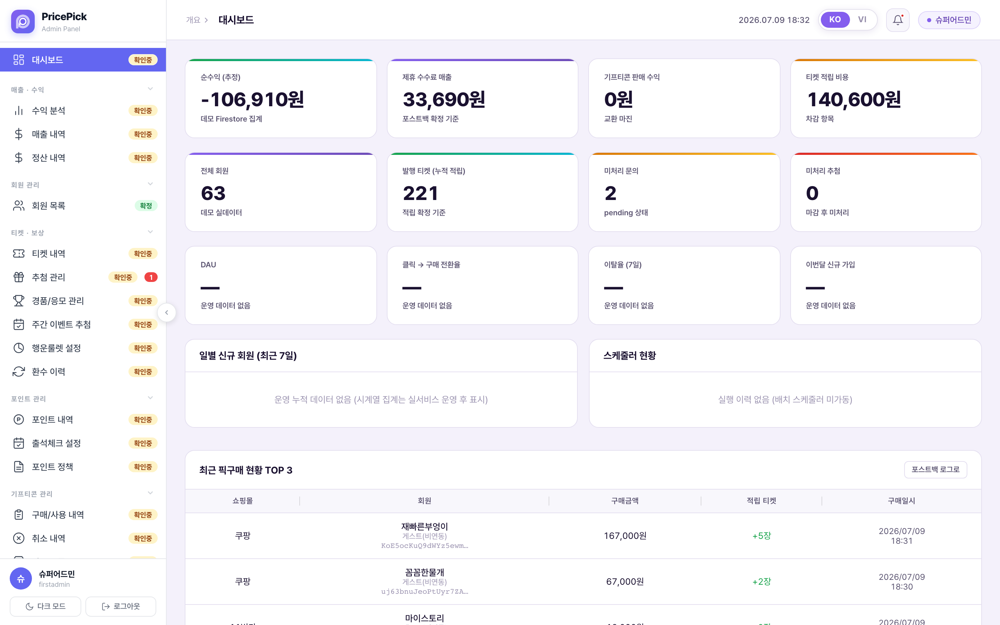
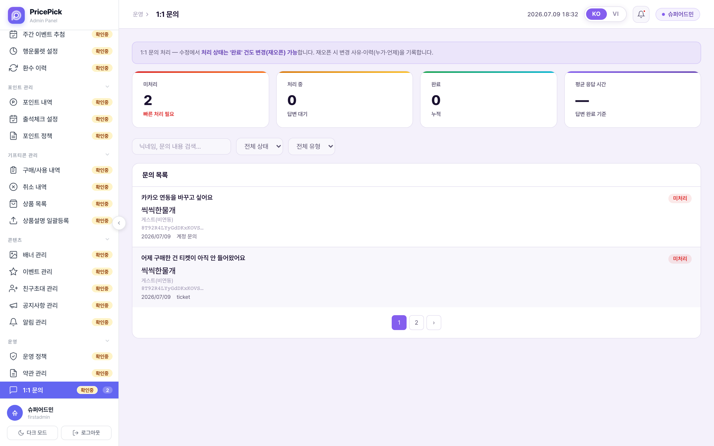
목록에서 문의를 클릭하면 상세 모달이 열린다. 문의 원문 확인 → 답변 작성 → 처리 상태 지정(완료 등) → "답변 발송". 권한 정책상 CS 역할은 조회 + 1:1 문의 답변만 가능하고 다른 데이터 수정은 불가.
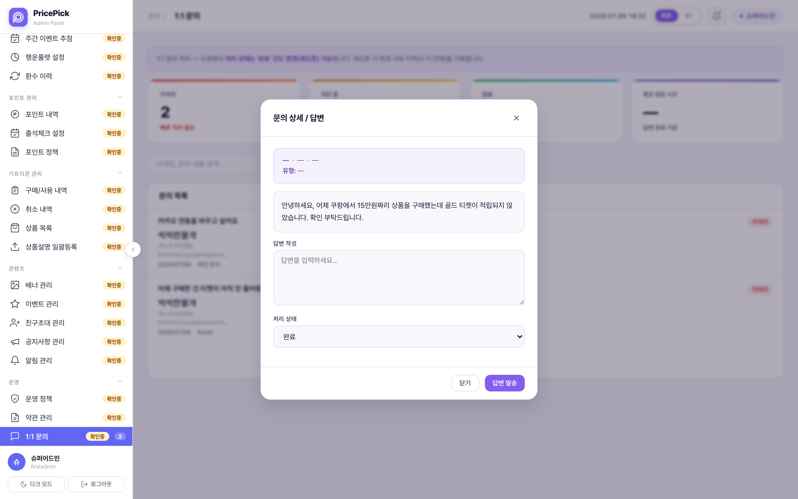
답변이 저장되면(상태 answered + 답변 본문 + 답변 시각) CMS 통계가 미처리 1 / 완료 1로 갱신되고 평균 응답 시간이 계산된다. 유저 앱에서는 해당 문의가 초록 "답변 완료" 뱃지로 바뀌고, 카드 안에 관리자 답변이 인라인으로 표시된다. 별도 알림(푸시) 없이 문의 내역 재진입 시 확인하는 구조.
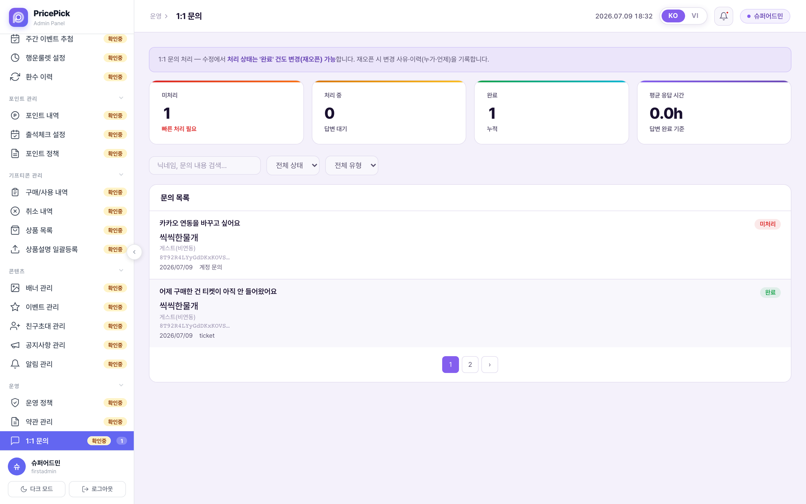
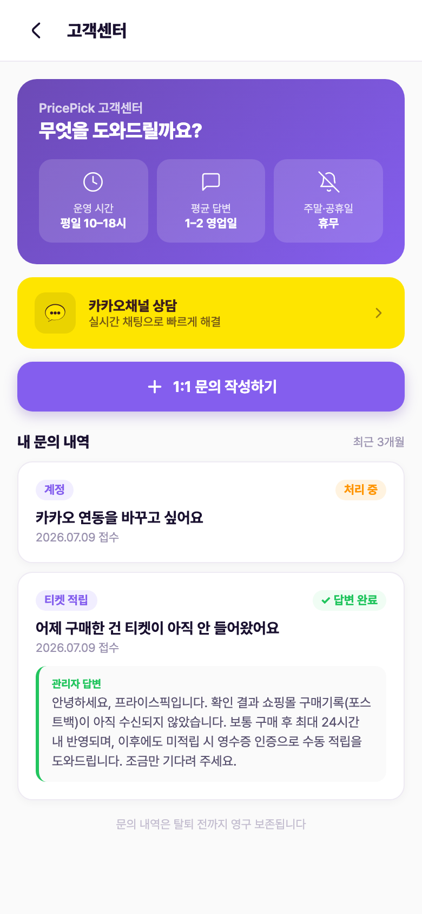
고객센터와 같은 "도움말" 그룹의 공지사항은 notices 컬렉션 실데이터를 고정(공지 뱃지) 우선 + 최신순으로 노출한다. CMS "공지사항 관리"에서 등록한 글이 이 화면에 뜬다. 이용약관·개인정보처리방침은 정적 문서 화면.
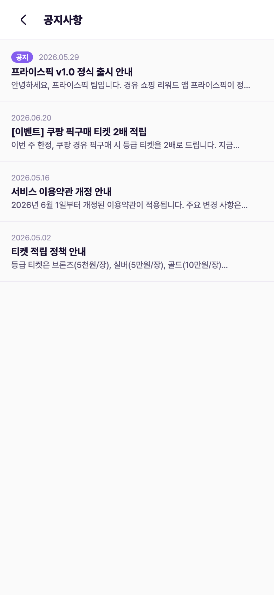
| 항목 | 내용 | 근거 |
|---|---|---|
| 상담 채널 | 카카오채널 상담(실시간 채팅) + 1:1 문의(비동기 접수) 2원화. 카카오채널은 앱이 채널 URL 딥링크만 열고 응대는 채널에서 — 앱 추가 로직 없음. | 앱 화면 / DevQA #8 ① 확정 |
| 운영 시간 | 평일 10:00–18:00, 주말·공휴일 휴무. 1:1 문의 답변은 접수 후 1–2 영업일. | 앱 고객센터 홈·작성 화면 |
| 문의 유형 | 티켓 적립 / 기프티콘 교환 / 티켓 교환·환수 / 계정·로그인 / 기타 (5종 택1 필수) | 앱 작성 화면 — 단 저장·집계 체계와 불일치(미결 3) |
| 입력 제한 | 제목 최대 50자 · 내용 최대 500자(안내상 최소 10자) · 유형+제목+내용 모두 입력 시 접수 가능 · 접수 즉시 버튼 비활성(중복 방지) | 앱 작성 화면 |
| 처리 상태 | 미처리(pending) → 처리 중(processing) → 완료(answered/completed). 앱에는 "처리 중 / 답변 완료" 2단계로 단순화 표시. | CMS 상태 뱃지 / 앱 렌더 규칙 |
| 재오픈 | 완료 건도 처리 상태 변경(재오픈) 가능. 재오픈 시 변경 사유·이력(누가·언제) 기록. | CMS 1:1 문의 안내문 |
| 보존 | 문의 내역은 탈퇴 전까지 영구 보존. 앱 목록 라벨은 "최근 3개월". | 앱 문구 — 라벨 정합은 미결 5 |
| 답변 확인 | 답변은 앱 문의 카드에 인라인 표시. 답변 완료 푸시 알림은 현재 화면·정책에 없음. | 앱 렌더 (알림 정책 미정의) |
| CMS 권한 | CS 역할 = 조회 전용 + 1:1 문의 답변, 데이터 수정 불가. 대시보드 KPI·네비 배지로 미처리 노출. | CMS 권한 정책 화면 |
| CS 보완 처리 | 포스트백 24시간 미수신 시 영수증 인증 기반 수동 지급 등 운영 보완은 CS가 수동 처리(이벤트 티켓 경로 5 포함). 1:1 문의의 대표 처리 시나리오. | 마스터 정책서(policyspec) SoT |
| 차단 계정 | 운영자 차단 계정은 로그인 시 차단 안내 화면 → "고객센터 연결" CTA로 유도(앱 외부 채널·메일). | 앱 error-blocked 화면 |
임의로 확정하지 않고 표시만 해둔 항목. 1·2번은 데모 실연동 작업, 3~7번은 정책·문구 결정 사안.
inquiries에 저장하지 않는다. 유저가 문의를 보내도 CMS에 안 잡힘. 실연동 필요 (보안규칙은 이미 로그인 유저 create 허용으로 준비돼 있음).answer·status·answered_at) 실연동 필요. 재오픈 이력 기록도 미구현.ticket 원문 그대로 노출됨(7단계 캡처에서 실증). 유형 코드 단일화 필요.